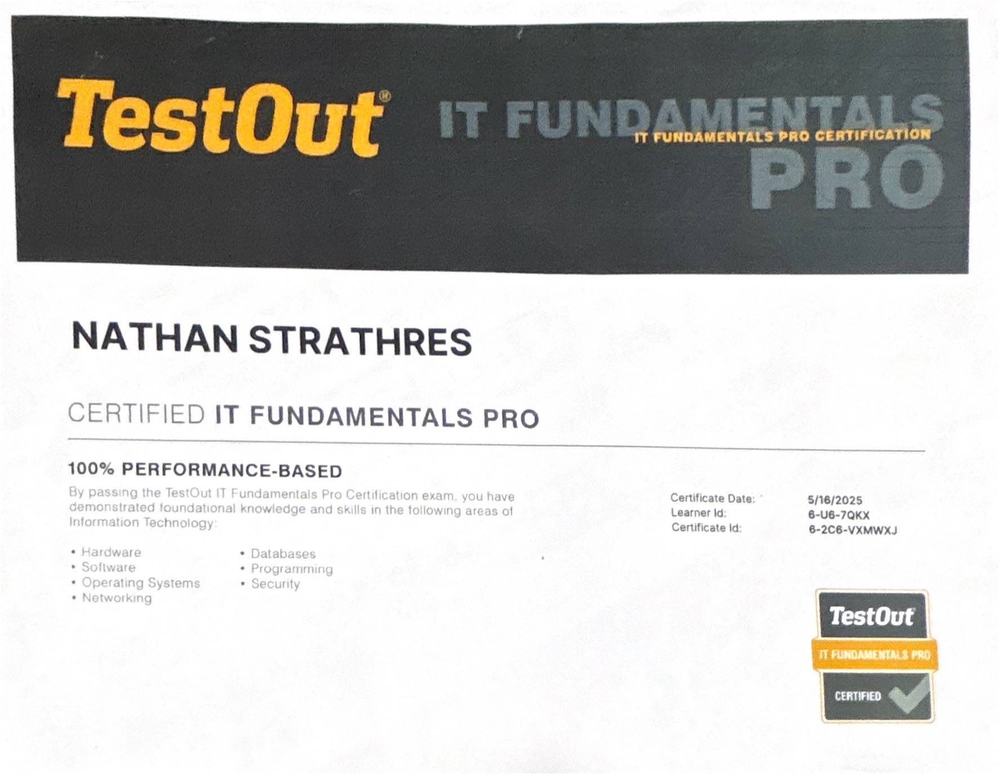
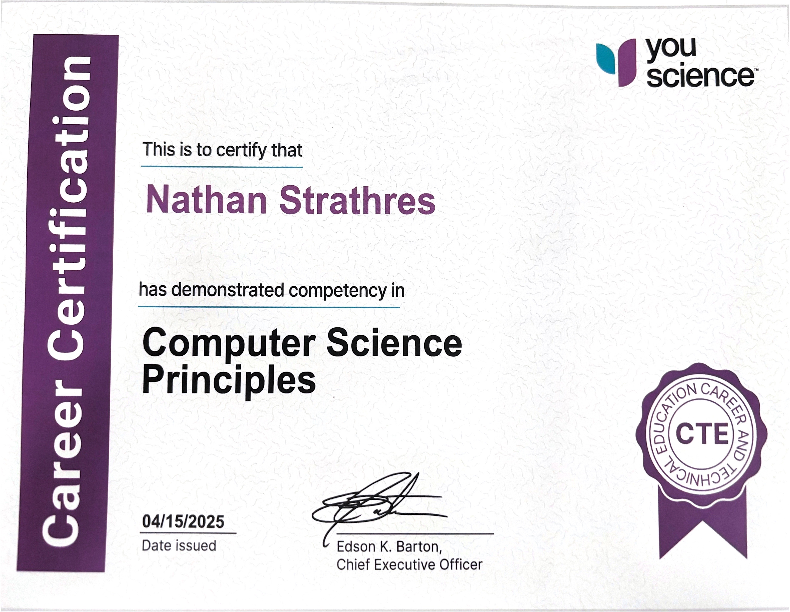
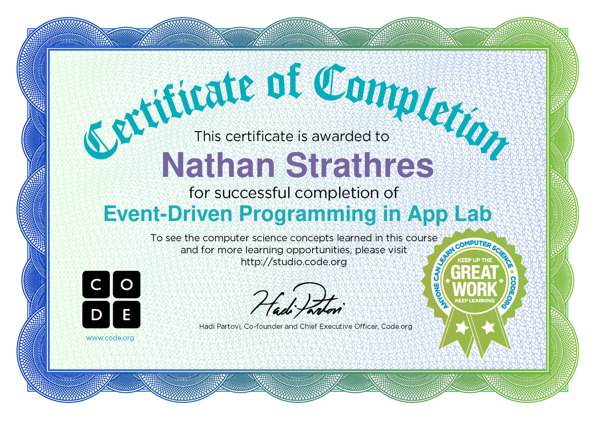

Hello! My name is Nathan Strathres and I am a Junior at Oxford High School. I am enrolled in both OHS and Oakland Schools Technical Campuses. At these schools I have built friendships and maintained good grades. In this portfolio I will go over all of my career experiences and certifications I have earned over the years of high school.
My Awards/Accomplishments
During my time here at OSTC I have learned a lot about HTML and CSS

I also have some certificates from OHS, take a look!



About me
My current job

I currently work at G's Pizza in Oxford Michigan as a busser and a dishwasher.
I have been working at this pizzeria for about year, and have learned many skills such as talking to customers and working as a team with my fellow employees.
What is my Post Secondary Plan?
I do not know what I want to do as a career in the future. As I grew up, I always had an interest in technology. I would play video games all the time and try to make my own Roblox games, even though I had no clue what I was doing. I would also use Scratch, the coding website for kids. I think programming can be fun and exciting , but it doesn’t sound as interesting as a career. At OSTC I have learned that I most likely do not want to go into the field of computer science.
Post graduation I will most likely take a short break, like a gap year. Then I might get a job and consider college. I would prefer not to go to college in the future, because the idea of more school does not interest me whatsoever. If I find an interest in a career later and it requires a degree, I might go to college, but I would really have to like the career.
Education
Oxford, MI High School
Diploma Expected August 2027
Current GPA of 3.4
Oakland Schools Technical Campus Northeast
Pontiac, MI
Computer Programming- Two year program